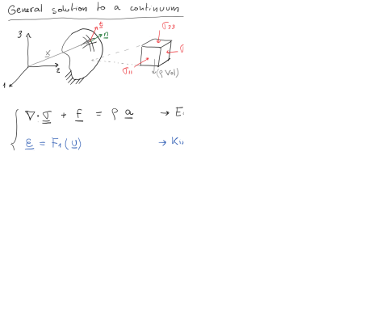
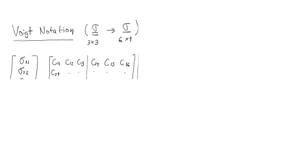
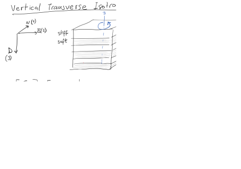
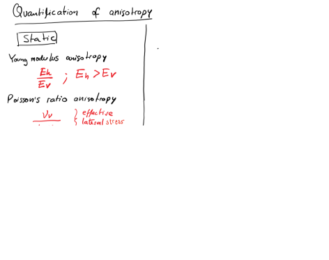
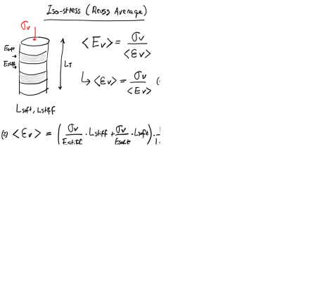
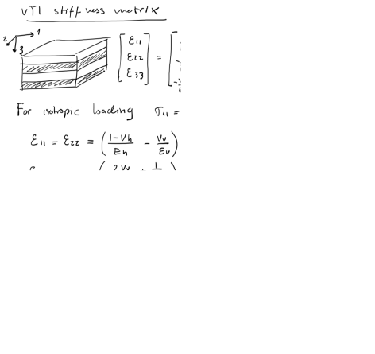
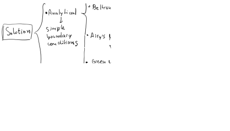

Subsections
This document is a draft.
Find hand written notes here: https://github.com/dnicolasespinoza/GeomechanicsJupyter/tree/master/ClassNotes.
Figure 2.1:
General solution for a continuum mechanics problem.
|
Figure 2.2:
Kinematic equations 1D and 3D.
 |
Figure 2.3:
Displacement field jacobian matrix.
|
Figure 2.4:
Strain tensor.
|
Figure 2.5:
Volumetric strain.
|
Figure 2.6:
Linear elasticity.
|
Figure 2.7:
Voigt notation.
|
Figure 2.8:
Orthotropic elasticity.
 |
Figure 2.9:
Vertical transverse isotropic elasticity.
|
Figure 2.10:
Isotropic elasticity.
 |
Figure 2.11:
Compliance matrix for isotropic elasticity.
|
Figure 2.12:
Stiffness matrix for isotropic elasticity.
|
Figure 2.13:
Stress solution for uniaxial strain condition in isotropic elastic media.
|
Figure 2.14:
Stress solution for tri-axial strain condition in isotropic elastic media.
|
Figure 2.15:
Elastic wave velocities and dynamic elastic coefficients.
|
Figure 2.16:
Degradation of elastic modulus (G) with strain magnitude and strain rate.
|
Figure 2.17:
Correlations between static and dynamic parameters.
|
Figure 2.18:
MEM application for hydraulic fracture geometry.
|
VTI compliance matrix (3 - vertical direction perpendicular to bedding):
where and
 and
and  is not related to the other parameters.
is not related to the other parameters.
In terms of stiffness coefficients:
VTI stiffness matrix (3 - vertical direction perpendicular to bedding):
![\begin{displaymath}%compliance matrix
\left[
\begin{array}{c}
\sigma_{11} \\
\...
...\
2 \varepsilon_{13} \\
2 \varepsilon_{12}
\end{array}\right]\end{displaymath}](img67.svg) |
(2.2) |
or in terms of Young moduli and Poisson ratios
The parameter is independent of all other parameters.
Figure 2.19:
Measurement of VTI static properties.
|
Figure 2.20:
Measurement of VTI dynamic properties.
|
Figure 2.21:
Correlations between dynamic and static VTI stiffness coefficients.
|
Figure 2.22:
Dimensionless parameters for anisotropic media.
|
Figure 2.23:
Parallel and series models for lamianted media.
 |
Figure 2.24:
Bulk volumetric modulus of a VTI material.
 |
Download the file LostHills.xls.
We would like to know the state of stress in the subsurface and its influence on a hydraulic fracture completion.
At every depth (and data-point) along the vertical well:
- Compute (and plot) total vertical stress as a function of depth (you may assume homogeneous rock above 1,750 ft), and overpressure parameter.
- Compute dynamic Poisson’s ratio and dynamic Young’s modulus from compressive and shear slowness (be careful with unit conversion).
- Compute static Young's modulus using a coefficient
.
- Compute (and plot) static plane strain modulus
 (Poisson ratio remains the same).
(Poisson ratio remains the same).
- Compute (and plot) horizontal stress assuming theory of elasticity and no tectonic strains.
- Compute (and plot) total maximum and minimum horizontal stress assuming theory of elasticity and
 and
and
 .
.
- The pay-zone is between 2,100 ft and 2,450 ft. A hydraulic fracture is planned to be executed with a vertical well at a depth between 2,130 ft and 2,160 ft. What will be the height of this fracture? Will it reach out to the entire pay zone?
Figure 2.25:
Bulk rock mass density, P-wave slowness, and S-wave slowness along a vertical well in the Lost Hills field.
|
Figure 2.26:
General solution for a continuum mechanics problem.
|
Figure 2.27:
Combination of equilibrium, constitutive and kinematic equations to obtain Navier's equations.
|
Figure 2.28:
Solution strategies to Navier's equation.
|
Figure 2.29:
Solution of static problems through virtual work.
 |
Figure 2.30:
Variational form of equilibrium equations.
|
Figure 2.31:
Strain energy and inclusion of linear elasticity.
|
[To be developed]
[To be developed]
Consider a 2D problem of a circular cavity subjected to far field effective stresses
 = 12 MPa and
= 12 MPa and
 = 3 MPa.
The diameter of the cavity is 0.2 m.
Rock properties: = 10 GPa, = 0.20, unconfined compression strength
= 3 MPa.
The diameter of the cavity is 0.2 m.
Rock properties: = 10 GPa, = 0.20, unconfined compression strength  = 30 MPa, tensile strength
= 30 MPa, tensile strength  = 2 MPa.
= 2 MPa.
- Using Kirsch equations compute (and plot)
 ,
,
 and
and
 for a domain
for a domain  = [-1m, +1m], and = [-1m, +1m]. You may define a polar grid for
= [-1m, +1m], and = [-1m, +1m]. You may define a polar grid for
 . How far does the presence of the wellbore influence stresses?
. How far does the presence of the wellbore influence stresses?
- Using Kirsch equations compute (and plot) stresses in a line ( = [0.1m, 1m], = 0 m) and ( = 0 m, = [0.1 m, 1 m]). Equations in Ch. 6.2 (https://dnicolasespinoza.github.io/)
- Using Kirsch equations compute (and plot)
and
for
 = 0.1 m. Is there any section of the rock in shear or tensile failure? Where?
= 0.1 m. Is there any section of the rock in shear or tensile failure? Where?
- Use FreeFEM++ (http://www3.freefem.org/) or FEniCS (https://fenicsproject.org/) to solve the same problem (
,
and
) assuming a domain size 2 m by 2 m. Compute
and
for the same lines as in point (b), and compare with Kirsch's analytical solution. Repeat the process for a domain size 0.5 m by 0.5 m. Are there any differences? Why?
- Plot the displacement field.
- EXTRA: compute principal stresses within FreeFEM++ and plot
and
.
Hint: An example code for 2D elasticity in FreeFEM++ and the corresponding explanation are available at https://github.com/dnicolasespinoza/GeomechanicsJupyter/: Kirsch_Shovkun.edp and FreeFEM_Tutorial_Shovkun.pdf. You can also try FreeFEM++ online here: https://freefem.org/tryit.
Consider a 2D problem of an elliptical fracture (half-length  = 10 m).
Solve the problem using just half of the domain.
Set the fracture along the left boundary of a domain: = [0 m, 100 m] and = [-50 m, 50 m], with fracture center at
= 10 m).
Solve the problem using just half of the domain.
Set the fracture along the left boundary of a domain: = [0 m, 100 m] and = [-50 m, 50 m], with fracture center at  (0,0) m.
This boundary will have a pressure boundary condition.
All other boundaries will have zero displacement.
Rock properties: = 30 GPa, = 0.20.
(0,0) m.
This boundary will have a pressure boundary condition.
All other boundaries will have zero displacement.
Rock properties: = 30 GPa, = 0.20.
Figure 2.32:
Planar fracture model.
|
- Use FreeFEM++ (http://www3.freefem.org/) or FEniCS (https://fenicsproject.org/) to solve for
,
and
imposing a fracture pressure
 = 10 MPa. Plot results.
= 10 MPa. Plot results.
- Export and plot stress perpendicular to the fracture direction
at the middle of the fracture (L1 = ( = [0, 100 m], = 0 m), Figure 2.32). How far does the influence of the fracture extend?
- Plot -displacements at the face of the fracture. Compare with analytical equation. Equations in Ch. 7.3.2 (https://dnicolasespinoza.github.io/).
- Plot
along fracture length and beyond fracture tips (line L2 = ( = 0 m, [-50, 50]) m, Figure 2.32) and compare with analytical Griffith solution.
- EXTRA: compare FreeFEM++ solution to analytical solution by Sneddon and Elliot, 1946. (Eq. 20 in https://doi.org/10.1016/j.fuel.2017.01.057).
Figure 2.33:
Fracture width and stress beyond tip.
|
Figure 2.34:
Stress intensity factor.
|
![$\displaystyle E_h = \frac{(C_{11}-C_{12}) \left[ C_{33}(C_{11}+C_{12})-2\: C_{13}^2 \right]}{C_{11}C_{33}–C_{13}^2} $](img61.svg)


![$\displaystyle C_{11} = \left[ \frac{1}{(1-\nu_h) E_v - 2 \nu_v^2 E_h} \right] \left( \frac{E_h E_v - \nu_v^2 E_h^2}{1+\nu_h} \right) $](img68.svg)
![$\displaystyle C_{33} = \left[ \frac{1}{(1-\nu_h) E_v - 2 \nu_v^2 E_h} \right] (E_v^2 - \nu_h E_v^2) $](img69.svg)
![$\displaystyle C_{12} = \left[ \frac{1}{(1-\nu_h) E_v - 2 \nu_v^2 E_h} \right] \left( \frac{\nu_v^2 E_h^2 + \nu_h E_h E_v}{1+\nu_h} \right) $](img70.svg)
![$\displaystyle C_{13} = \left[ \frac{1}{(1-\nu_h) E_v - 2 \nu_v^2 E_h} \right] (\nu_v E_h E_v) $](img71.svg)

![\includegraphics[scale=0.60]{.././Figures/LostHills.PNG}](img84.svg)
![\includegraphics[scale=0.40]{.././Figures/CH2-26.PNG}](img86.svg)
![\includegraphics[scale=0.40]{.././Figures/CH2-01.PNG}](img40.svg)
![\includegraphics[scale=0.40]{.././Figures/CH2-03.PNG}](img42.svg)
![\includegraphics[scale=0.40]{.././Figures/CH2-04.PNG}](img43.svg)
![\includegraphics[scale=0.40]{.././Figures/CH2-05.PNG}](img44.svg)
![\includegraphics[scale=0.40]{.././Figures/CH2-06.PNG}](img45.svg)
![\includegraphics[scale=0.40]{.././Figures/CH2-07.PNG}](img46.svg)
![\includegraphics[scale=0.40]{.././Figures/CH2-09.PNG}](img48.svg)
![\includegraphics[scale=0.40]{.././Figures/CH2-11.PNG}](img50.svg)
![\includegraphics[scale=0.40]{.././Figures/CH2-12.PNG}](img51.svg)
![\includegraphics[scale=0.40]{.././Figures/CH2-13.PNG}](img52.svg)
![\includegraphics[scale=0.40]{.././Figures/CH2-14.PNG}](img53.svg)
![\includegraphics[scale=0.40]{.././Figures/CH2-15.PNG}](img54.svg)
![\includegraphics[scale=0.40]{.././Figures/CH2-16.PNG}](img55.svg)
![\includegraphics[scale=0.40]{.././Figures/CH2-17.PNG}](img56.svg)
![\includegraphics[scale=0.40]{.././Figures/CH2-18.PNG}](img57.svg)
![\includegraphics[scale=0.40]{.././Figures/CH2-19.PNG}](img74.svg)
![\includegraphics[scale=0.40]{.././Figures/CH2-20.PNG}](img75.svg)
![\includegraphics[scale=0.40]{.././Figures/CH2-21.PNG}](img76.svg)
![\includegraphics[scale=0.40]{.././Figures/CH2-22.PNG}](img77.svg)
![\includegraphics[scale=0.40]{.././Figures/CH2-25.PNG}](img85.svg)
![\includegraphics[scale=0.40]{.././Figures/CH2-27.PNG}](img87.svg)
![\includegraphics[scale=0.40]{.././Figures/CH2-29.PNG}](img89.svg)
![\includegraphics[scale=0.40]{.././Figures/CH2-30.PNG}](img90.svg)
![\includegraphics[scale=0.50]{.././Figures/FracModel.PNG}](img107.svg)